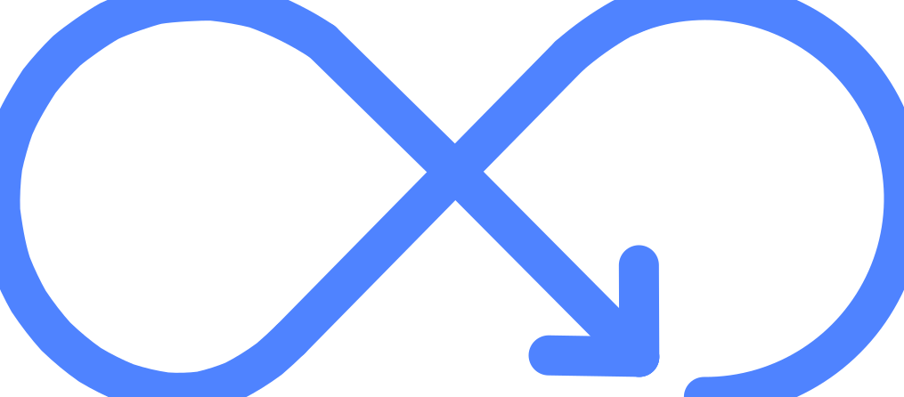

LeanSignal: Demand-Driven Observability
Flipping the observability model to put user value first. LeanSignal is the first observability platform inspired by lean principles — designed to fix the broken cost-value balance of current solutions by ensuring only telemetry signals serving a declared need are collected and stored.
The Problem
Observability's Broken Cost-Value Balance
The Core Issue
Modern observability platforms operate on a "Store Everything" model. Teams collect massive volumes of telemetry with no declared purpose — and no clear link between what they pay for and what actually delivers value.
The Symptoms
- Low signal-to-noise ratio — most collected data is never queried
- No cost accountability — teams can't lint the cost to value
- Reactive pruning — cost controls happen only after a bill shock
- Opacity — hard to understand what you're actually paying for
The Solution
Demand Governs the Pipeline
LeanSignal inverts the traditional model. Instead of collecting everything and pruning later, user-declared needs govern what enters the pipeline. Every signal must justify its existence before it's collected.
Declared Need First
Every signal is tied to a specific, declared user need before collection begins.
Direct Cost-Value Link
Cost is inherently connected to value from day one — no surprises.
Telemetry Control Loop
A continuous feedback loop keeps the pipeline aligned with evolving demand.
Evolution
Three Eras of Observability
The Past
Small, static workloads. "Store Everything" was affordable and practical. Costs were manageable because scale was limited.
The Present
Exploding scale and "Bill Shock." Teams rely on reactive tools to prune telemetry only after damage is done. Cost spirals out of control.
The Future
LeanSignal. Proactive control. Users manage telemetry data flow with full clarity on signal value — staying one step ahead of costs at all times.
Value Proposition
Cost Over Time: Lean vs. Traditional

Traditional Vendors
Start high. Collect everything initially. Surprise bills arrive. Reactive pruning kicks in — but the damage is already done.
LeanSignal
Start near zero. Grow strictly in parallel with actual demand. When demand drops, costs drop with it. The real value is inherently aligned to the green line — regardless of what the vendor charges.
Lean Principles
Built on a Foundation of Lean Thinking
Eliminate Waste
Only signals with declared value enter the pipeline. Everything else is eliminated at the source — not pruned after the fact.
Pull, Don't Push
Telemetry is pulled by demand, not pushed by assumption. The system responds to what users actually need.

Continuous Improvement
The telemetry control loop ensures the pipeline evolves alongside your actual needs — no stale signals, no dead cost.
The Team
Senior Engineers. Deep Domain Expertise.
Nikola Petković — Product
Senior Engineer with deep product intuition and systems thinking. Former Microsoft engineer with experience building large-scale distributed systems. Leads product strategy and user research at LeanSignal.
linkedin.com/in/petkopumaMadalin Broscaru — Engineering
Senior Engineer with extensive backend and infrastructure expertise. Former Oracle engineer with a track record of building high-performance, cost-efficient systems at enterprise scale. Leads platform architecture at LeanSignal.
linkedin.com/in/bmadalinThe Future of Observability Is
Demand-Driven
Engineering teams deserve an observability platform where cost and value are always in sync. LeanSignal makes that possible — by putting user need at the center of every architectural decision.